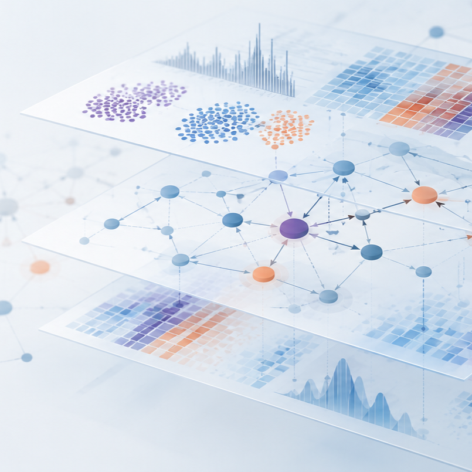

BioSB Hot Topic Symposium
Disease Maps
A half-day meeting on curated, computable disease maps — how they're built, maintained, and used for mechanistic interpretation across the systems biology community.
- Date
- 30 October 2026
- Time
- 12:30 – 17:00
Register
Registration deadline: 14 October 2026
Program
Full schedule →Talks from 13:00, followed by hands-on breakout sessions at 15:35 and drinks from 16:15. See the program page for the full timed schedule and the breakout materials page for what to bring or install ahead of the hands-on sessions.
Speakers
Full bios →- Marek OstaszewskiUniversity of Luxembourg, Luxembourg
- Marie CorradieHU University of Applied Sciences Utrecht, Netherlands
- Matti van WelzenUniversity of Rostock, Germany
- Luiz LadeiraUniversity of Liège, Belgium
- Martina Summer-KutmonMaastricht University, Netherlands